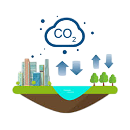
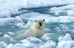
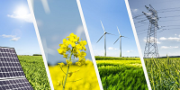

Últimas noticias

El calentamiento global es impulsado principalmente por la quema de combustibles fósiles como el carbón, el petróleo y el gas natural, que liberan grandes cantidades de dióxido de carbono a la atmósfera. Desde la Revolución Industrial, la concentración de CO2 en el aire ha aumentado más de un 50%, alcanzando niveles sin precedentes en los últimos 800,000 años.
La deforestación agrava el problema al reducir la capacidad del planeta para absorber ese CO2. Se estima que la tala de bosques representa cerca del 10% de las emisiones globales anuales. La ganadería intensiva también contribuye de forma significativa, pues las reses producen metano, un gas con un poder de calentamiento 25 veces mayor que el dióxido de carbono.
Los procesos industriales, el uso excesivo de fertilizantes y la gestión inadecuada de residuos sólidos completan el panorama de las fuentes de emisión. Sin una reducción drástica en todos estos sectores, los modelos climáticos proyectan un aumento de temperatura global de entre 2.5°C y 4°C para finales de este siglo.

El aumento de la temperatura global ya está provocando el derretimiento acelerado de glaciares y casquetes polares. El Ártico se calienta cuatro veces más rápido que el resto del planeta, y se estima que para 2050 los veranos en esa región podrían ser completamente libres de hielo marino, algo sin precedentes en la historia humana.
La elevación del nivel del mar amenaza a cientos de millones de personas que viven en zonas costeras. Países como Bangladesh, las Maldivas y varias islas del Pacífico ya enfrentan inundaciones periódicas que obligan a desplazamientos masivos de población. Los patrones climáticos se vuelven más extremos: sequías prolongadas, huracanes más intensos y olas de calor más frecuentes afectan la producción de alimentos a nivel mundial.
La biodiversidad también resiente los cambios: se calcula que más de un millón de especies están en riesgo de extinción debido a la alteración de sus hábitats naturales. Los corales, sensibles al aumento de temperatura del océano, han sufrido episodios masivos de blanqueamiento que amenazan ecosistemas marinos enteros de los que dependen millones de personas.

La transición hacia energías renovables como la solar y la eólica es la solución más urgente y efectiva para reducir las emisiones globales. En la última década, el costo de la energía solar se ha reducido en más de un 90%, haciendo que sea hoy la fuente de electricidad más barata de la historia en muchos países. Invertir en infraestructura verde no solo combate el cambio climático, sino que también genera millones de empleos.
A nivel individual, reducir el consumo de carne, optar por el transporte público o la bicicleta, y disminuir el desperdicio de energía en casa marcan una diferencia real. Si cada persona en el mundo adoptara una dieta con menos productos de origen animal, se podría reducir hasta un 70% de las emisiones relacionadas con la agricultura. Pequeñas decisiones cotidianas, multiplicadas por millones de personas, tienen un impacto colectivo enorme.
La reforestación, la protección de bosques existentes y el impulso a la agricultura sostenible son también herramientas clave. La presión ciudadana hacia políticas públicas más ambiciosas — como impuestos al carbono, prohibición de vehículos de combustión interna y estándares de eficiencia energética — es indispensable para lograr el cambio a la escala y velocidad que el planeta requiere.